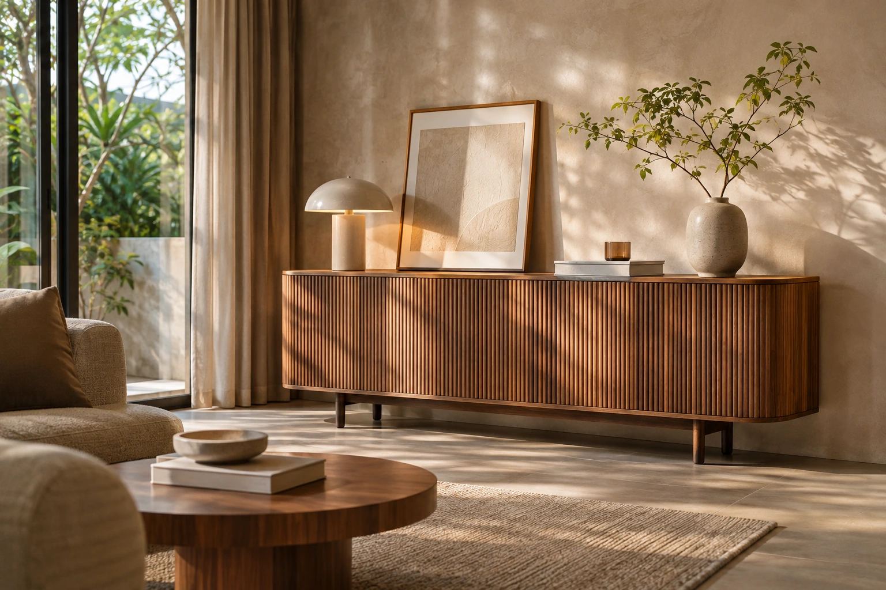

Ukuran & gerak
Dimensi furnitur, akses pintu, jalur sirkulasi dan ruang gerak dibaca sebagai satu kesatuan.
Furnitur custom dimulai dari cara ruang dipakai: apa yang perlu disimpan, bagaimana orang bergerak, dan detail apa yang membuat keseharian terasa lebih ringan.
NARA OBJECTS / KONSEP STUDIO — BUKAN DOKUMENTASI PROYEK NYATA

Bukan sekadar mengisi bidang kosong. Setiap keputusan sebaiknya menjawab fungsi, skala, akses, dan ritme ruang.
Dimensi furnitur, akses pintu, jalur sirkulasi dan ruang gerak dibaca sebagai satu kesatuan.
Permukaan, konstruksi, hardware dan finishing dipilih berdasarkan penggunaan serta perawatan.
Kebutuhan ruang, kondisi lokasi dan cara pemasangan ikut membentuk keputusan desain.
Kategori adalah pintu masuk percakapan, bukan batas bentuk akhir. Solusi dirancang mengikuti konteks ruang.
Memahami kebutuhan, lokasi, ukuran dan prioritas ruang.
Menyelaraskan dimensi, material, hardware dan batas pekerjaan.
Konsep, gambar kerja, harga dan jadwal perlu disepakati sebelum produksi.
Pelaksanaan mengikuti spesifikasi dan kesepakatan proyek.
Material, konstruksi, hardware dan finishing memiliki kompromi berbeda. Pilihan terbaik bergantung pada lokasi, beban, kelembapan, perawatan dan anggaran.
Lebar, tinggi, kedalaman, akses masuk dan ruang gerak menjadi titik awal perancangan.
Brief awal paling membantu ketika menyebutkan fungsi, lokasi, perkiraan ukuran dan batas ruang. Kelayakan akhir tetap bergantung pada pengukuran, akses, material, kompleksitas dan persetujuan spesifikasi. Ini adalah konsep layanan sintetis, bukan penawaran bisnis nyata.
Dimensi, bukaan, jalur masuk dan kondisi lokasi perlu dipahami.
Catat apa yang perlu disimpan, digunakan atau diperbaiki.
Material, detail, jadwal dan cakupan perlu disepakati sebelum produksi.
Mulai dari lebar, tinggi, kedalaman, posisi furnitur dan akses masuk. Ukuran awal membantu percakapan, bukan pengganti pengukuran final.
Dimensi, material, hardware, finishing, detail custom, kondisi lokasi dan instalasi.
Tidak. Form di bawah hanya simulasi lokal untuk menyiapkan brief; data tidak dikirim atau disimpan.
Catat kebutuhan awal agar diskusi lebih terarah. Semua data di halaman konsep ini hanya diproses di browser.